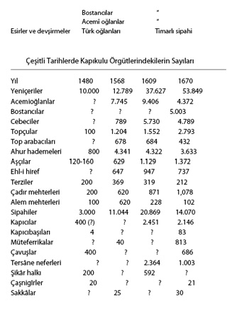

Osmanlı Devlet Yapısının Temel Örgütü: Kul Sistemi
Kul (gulâm) sistemi Osmanlı devlet idaresinin temel kurumlarından biridir. Sarayda ve devlet hizmetinde kullanılmak üzere kölelerden gençler yetiştirilmesi yöntemi Osmanlılara, Orta-Doğu İslâm devletlerinden gelen eski bir gelenektir.7Anadolu Selçuklularında Şerefeddîn Gulâm, Hass Balaban ve Karatay kardeşler gibi kul aslından ünlü kumandanlar biliyoruz.8Kullar yalnız askerî hizmetlerde kullanılıyordu. II. Keykâvûs, büyük emîrlikleri kölelere verince, Türk aslından emîrler ona karşı cephe aldılar.9
Osman Gazî Bursa ablukasına “kulu Balabancık Bahadır”ı atamıştır.10Osmanlılarda kölelerden saray ve idare adamları yetiştirildiği hakkında Orhan Gazî devri belgelerinde kayıtlar vardır11 I. Murad devrinde yeniçeri ordusu savaş esirlerinden kurulmuştur12 Osmanlı idaresi, kendi tebaası Hıristiyan halkından aynı amaçla çocuk toplama yöntemini getirmiştir. Devşirme oğlanı denilen bu çocuklar, esir sayılmazdı. Devşirme, Osmanlıların kul sistemine getirdikleri önemli bir yeniliktir.
Merkeziyetçi bir imparatorluk kurmaya çalışan I. Bayezid devrinde kul sistemi tam bir gelişme gösterdi. Tahrîr defterlerinde bu devre kadar inen kayıtlar, onun imparatorluğun her tarafında yalnız yüksek idarî-askerî makamları değil, timarları da kullara verdiğini göstermektedir. Bu radikal hareket, gazî çevrelerinin duygularını yansıtan halkçı anonim tarihlerde tepkiyle karşılanmıştır. Kul yöntemi ve devşirme, çağdaş Bizans ve batılı kaynaklarda anılır. Dukas, Bayezid’in sarayında seçilmiş çocuklardan bahseder. Devşirme için Yıldırım Bayezid döneminde yazılmış Chronique du Religieux de Saint-Denya der ki (I, 427) “Ils enlevent les enfants pour les instruire dans leurs impures croyances”.
II. Murad devrinde bu sistem hakkında çağdaş kroniklerde olduğu kadar resmî arşiv kayıtlarında da geniş malzemeye sahip bulunuyoruz.13Musâ Çelebi’nin (1411) kapıoğlanı 7.000 kişiye,
II. Murad’ınki 4-5 bin kişiye14 varmakta idi. Arvanid sancağı defterine (1432) göre de orada askerî sınıfın her kademesinde pâdişah kulları ve bey kulları timarlı sipahiler arasında çoğunluğu oluşturmakta idi.
Çağdaş yerli ve yabancı gözlemcilerin açık ifadeleri, bu sistemin Osmanlılar tarafından, beklenen sonuçları bilinerek uygulandığını kanıtlamaktadır.15
Zamanla Osmanlı pâdişahları kendi icra gücünü, yalnız kendi kullarına vermeyi bir prensip olarak kabul etmişlerdir. 15. yüzyılda fethedilen bölgelerde yüksek sınıfa mensup beyzâdeler, Osmanlılar tarafından saraya alınmakta, orada ayrıcalıklı muamele görmekte ve saraydan göreve çıkma zamanı çoğu kez bey unvanıyla en önemli mevkilere getirilmekte idiler. Böylece, Osmanlı öncesi Rum, Bulgar, Sırp ve Arnavut aristokrasilerine mensup birçok kişizâdeler, bu devirde Osmanlı beyleri ve vezirleri olarak hizmet etmişlerdir. Ancak Anadolu Selçuklularında olduğu gibi, kul sisteminden gelenlere yalnız askerî makamlar verilmiş, mâliye ve yazıişleri idareciliklerine genellikle ilmiyye sınıfından Türk Müslüman unsurlar getirilmiştir. Kul aslından olanları küçümseme ve onlara karşı haset ve düşmanlık olduğu anlaşılmaktadır.16Mutlak merkeziyetçi imparatorluğunu kurarken II. Mehmed kul sistemini geliştirdi ve veziriâzamlık dahil olarak devletin icra makamlarını kulların eline verdi. Bu devirde ulema, vezirliği yalnız pâdişah kullarına mahsus bir makam saymakta idiler.17
16. yüzyılda ehl-i örf, yani pâdişah adına emir verme yetkisine sahip kullar anlamına geliyordu. Kullardan oluşan kapıkulu, ilk devirde devlet içinde üstün nüfuzu olan kudretli uc beyleri karşısında, Osmanlı pâdişahlarının merkezî otoritesinin kurulmasında başlıca destek olmuştur. Koçi Bey18 kapıkulunun eyâlet askeri karşısında bir denge oluşturduğunu ve kendi zamanında, (17. yüzyıl) bu dengenin yıkılmış olduğunu ifade etmiştir.
Kul sistemi, Kanunî Süleyman (1520-1566) ve ilk iki halefi zamanında en geniş uygulama aşamasına erişmiştir.
Kulların menşei başlangıçta en çok savaş esirleri idi. Sarayda Balkan senyör çocuklarından rehine olarak tutulanları buna katmak gerekir. Büyük şehirlerde esir pazarlarından en iyi esirler pâdişah için satın alınırdı. I. Bayezid devrinden itibaren kullara devşirme’den gelen çocuklar katılmıştır. 16. yüzyılda her menşeden toplanan kulların toplamı yılda 7-8 bine yükseliyordu. Bunun ortalama 3.000 kadarı devşirme idi. Devşirme oğlanları İstanbul’a getirilince, vücut ve karakter itibariyle en iyileri seçilir, bazen sultanlar seçimde bizzat hazır bulunurlardı. Saray için seçilenler İstanbul’da Galata ve İbrahim Paşa Saraylarına, taşrada Edirne ve Manisa Saraylarına gönderilirdi. Kalanların çoğu yeniçeri olmak üzere Anadolu’da Türk köylülerin yanına gönderilir, küçük bir kısmı pâdişah bahçelerinde hizmet için bostancı yapılırdı. Saraya ayrılmış olanlara içoğlanı, yeniçeri olacaklara acemioğlanı denirdi. Ayrıca, fethedilen yerlerde soylu ailelerin çocukları seçilerek saraya gönderilirdi. 16. yüzyıl başlarında Galata Sarayı’nda 300, Edirne Sarayı’nda 300 içoğlanı vardı. Bu oğlanlar, 2-7 yıl bu saraylarda sıkı bir disiplin altında eğitim gördükten sonra çıkma denilen ikinci bir elemeden geçer ve en uygun görülenleri seçilerek pâdişahın oturduğu sarayda, yani Yeni Saray’da Büyük Oda ve Küçük Oda denilen dairelere alınırlardı. Saraya alınmayanlar kapıkulu sipahi bölüklerinden alt kademede bulunan ulûfeciler ve garîbler bölüklerine verilirdi. 1537’de Yunus Bey’e göre,19pâdişahın sarayında 8 ila 20 yaş arasında 700 içoğlanı vardı. Büyük Oda’da ve Küçük Oda’daki oğlanlar yalnız okuma-yazma ve bedeni idmanlarla uğraşırlardı. İslâmî eğitimden sonra içoğlanı kendi özel eğilimine göre özel bir alanda derinleşmek imkânına sahipti. Odalarda türlü beceri ve fenler, yani hat, inşa, siyakat ve hesab, musiki de öğretilirdi. Bunlar kâtip sınıfına geçebilirlerdi. II. Bayezid, oğlanların tahsili ile şahsen ilgilenirdi. O, dinî ilimlerde derinleşenlerin ilmiyeye girmesine izin vermişti. Odalarda oğlanlara beden kuvvetini geliştirme, binicilikte ve silâhşörlükte beceri kazanma imkânı verilirdi. Başlıca sporlar, ağırlık taşımak ve çekmek, güreş, ok atma, süvarilik, kılıç talimi, tomak ve cirit oyunları idi. Bundan başka her içoğlanı bir hizmette veya sanatta beceri kazanmak zorunda idi. Enderunda minyatür, nakş, ciltçilik, musiki ve hattatlıkta birçok üstat yetişmiştir. Bu lüzumlu bilgiler ve maharetler yanında saraydaki terbiyenin en önemli amacı, pâdişahın hizmetinde kendisine mutlak bağlılık ve itaat duyguları aşılamaktı. Odalarda mutlak bir disiplin uygulanırdı. Yatma, kalkma, yemek ve istirahat için belli saatler belirlenmişti. Her istedikleri zaman konuşamazlar, dışarı ile ve aileleri ile ilişkide bulunamazlardı. Saraydan çıkıncaya kadar bir manastır hayatı yaşar, kadın yüzü göremezlerdi. Hadımlar aralarında yatar, onların gece gündüz her türlü hareketlerini gözetlerlerdi. Saraydan ayrılan Menavino20 Enderun’da verilen terbiyeden güdülen gayeyi şöyle özetler: Tam Müslüman, kibar konuşmasını ve hareket etmesini bilen, edebiyata âşinâ, nâmuslu, nefsine hâkim çelebiler, centilmenler yetiştirmek. Odalarda oğlanlar, onar kişilik gruplara ayrılmış olup her grubun başında da yetişkin bir oğlan lala unvanı ile arkadaşları arasındaki disiplinden sorumludur. Oğlanlar, birbirlerine laladaş derler. Fakat odaların asıl gözetimi, kapıoğlanı kethüdasına verilmiştir. O, kendi emrindeki hadımlarla (miktarları 16 ile 30 arasında değişmiştir) bu görevi yerine getirir.
Sarayda devamlı personeli hadımlar oluşturur. Bunlar, bu maksatla hadım edilmiş kölelerdir. Disiplini koruyan ve oğlanları terbiye eden onlardır. Bu hadımlar veya akağalar, Fâtih devrinde 20, I. Selim devrinde 40 kişi idiler. Bütün hadımların başı kapıağası, diğer adıyla babussaâde ağası’dır. Onun altında sırasıyla üç odabaşı, yani sırasıyla hâs-odabaşı, hazinedârbaşı (ser-hâzinîn), kilercibaşı gelirdi. Bunlar pâdişahın kişisel hizmetleri ile görevli olup dışarıda ve içeride daima yanında bulunurlar, gece nöbet tutarlardı. Onların pâdişaha doğrudan doğruya arzda bulunma yetkisi vardı. Arz ağalarının sayısı sonraları artmıştır. Kapıağası, pâdişah adına sarayın mutlak âmiridir. Sarayda içoğlanı olarak bulunmuş J.-M. Angiolello, onun için, sarayda “Sultandan maada herkesin âmiridir” der. Pâdişah, yalnız saray işlerinde değil, dışarıya ait devlet işlerinde de onun fikrini alırdı. II. Selim ve III. Murad devirlerinde kapıağası Gazanfer Ağa, devlet işlerinde nüfuz kazanan ağalardandı. 1584’te Habeşî Mehmed Ağa, haremin başı Darussa‘âde ağalığını bağımsız hale getirmiştir. Hazinedarbaşılıktan kapıağalığına geçilirdi. III. Ahmed, Silâhdâr Ali Ağa’yı (sonra veziriâzam) sarayın genel âmiri tâ‘yin ettikten sonra kapıağaları ikinci dereceye düşmüştür. Kapıağaları, çıkma’da, vezirlik, beylerbeyliği, daha sonraları 16. yüzyılda Mısır valiliğine tâ‘yin edilegelmişlerdir.
Hâs odabaşı, hazinedârbaşı ve kilercibaşı, pâdişahın doğrudan doğruya kişisel hizmetlerine bakan yukarı odaların (koğuşların) âmiridirler. Oğlanlar, Büyük Oda ve Küçük Oda’da normal olarak dört yıl tahsil ve terbiyeden sonra yeni bir elemeden geçerler. Buna çıkma denir. Çıkmada en uygun görülenler, hazine ve kiler odalarına alınırlar, kalanlar kapıkulu süvari bölüklerinden sipahi-oğlanları ve silâhdârlar bölüklerine verilir. Yukarı odalar arasında en yükseği, pâdişahın şahsî güvenliğine ve şahsî hizmetlerine bakan hâs-oda’dır. I. Selim’den sonra bu odanın bir görevi, Peygambere ait eşyanın muhafaza edildiği Hırka-i Şerîfe dairesine bakmaktı. Fâtih Kanûnnâmesi’ne göre hâs-oda’da 32 odaoğlanı ile bir silâhdâr (pâdişahın silâhını taşır) bir rikâbdâr (ayakkabılarına bakar), bir çokadâr (dış elbiselerine bakar), bir dülbendoğlanı (iç çamaşırlarını saklar) vardır.
17. yüzyıl başlarında bazı özel hizmetler için seferli odası adıyla dördüncü bir oda eklenmiştir. Burada, berberler, tellâklar, soytarılar, pehlivanlar, musikişinâslar, şâirler, hânendeler toplanmıştır. Personel, 1686’da 149 kişiyi bulmuştur. Enderun mehterhanesi bu odada idi. Seferli odasında çeşitli sanatlara, ulum ve fünuna önem verilmiş, buradan birçok değerli sanatkâr yetişmiştir.
Oğlanlara ait terfi, nakil gibi bütün işler kapıağasının veya hâs-odabaşının arzı üzerine bizzat pâdişahın emriyle yapılırdı. Pâdişahlar zaman zaman odaları ziyaret eder, yarışmalarda hazır bulunurlar ve oğlanları ödüllendirirlerdi.
Pâdişah sefere çıktığı zaman enderun halkı kendisiyle beraber gider, kendilerine at ve silâh verilirdi.
Osmanlı sarayı başlıca enderun (iç) ve bîrun (taşra) olarak iki kısma ayrılmıştır. Enderunda pâdişahın kişisel hizmetleri ile gulâmların eğitimine yer verilmiştir. Enderun, pâdişahın özel hayatının geçtiği bir yer olduğu kadar aynı zamanda bir mekteptir. Bîrun ise, onun dış dünya ile ilişkilerine ait hizmetlerin bulunduğu bölümdür. Fatih Kanûnnâmesi’ne göre, bîrundaki teşkilâtın âmirleri derecelerine göre şöyle sıralanmıştır: Yeniçeri ağası, mîr-alem, kapıcıbaşı, mîr-ahur, çakırcıbaşı, kapıcılar kethüdası, cebecibaşı, topçubaşı. Bu son ikisi dışında ötekilere, pâdişahın yanında gitmek ayrıcalığına sahip oldukları için, özengi-ağaları veya rikâb-ağaları denirdi. Bu ağalara bağlı gruplardan başka, bîrunda; müteferrikabaşıya bağlı müteferrikalar, çavuşbaşıya bağlı çavuşlar, darusaâde ağasına bağlı baltacılar, bostancıbaşıya bağlı bostancılar bulunurdu.21
1527 yılında bîrundaki kapıkulları hakkında şu resmî liste22 bir fikir verir.
Bu tarihte tüm devlet gelirleri 538 milyon akçadır. Kapıkulu mevcudu 1527’den sonra bir yüzyıl içinde üç katından fazla bir artış göstermiş, zaman zaman kısıtlamalar yapılmıştır.
Kul sisteminde grupların ve eyâletler idaresinin ahenkli bir bütün halinde işlemesini sağlayan manivela çıkmadır; yani belli aralarla, 2-7 yılda bir veya her pâdişahın cülûsunda yapılan terfi ve nakillerdir. Çıkmada Büyük ve Küçük odalardaki oğlanların eski’leri, yani kıdemlileri, yukarı odalara, sırasıyla, seferli, kiler, hazine odalarına, kalanları da sipahi oğlanları ve silâhdâr bölüklerine nakledilir, seferli, kiler ve hazine odalarındaki kabiliyetli eskiler ise, hâs-odaya yükseltilirdi.
Çıkmada enderun ve bîrunda bütün gruplar hareketlenirdi. Bîrundaki ağalardan özengi ağaları, sancak beyliği veya beylerbeyliği ile, oğlanlar ise zeâmet ile eyâletlere çıkarlardı. Çaşnigîr ve müteferrikalar ile bölüklerdeki sipahiler zeâmete, çavuşlar, kapıcılar ve yeniçeriler genelde timara çıkarlar, yani eyâletlerde zeâmet ve timar tasarruf eden sipahi sınıfına geçerlerdi. Bostancı ve aşçıların ise, çıkmada ileri gelenleri süvari bölüklerine ve kapıcılığa, kalanları yeniçeri ocağına çıkarılırdı. Özetle, enderun ve bîrundaki içoğlanlarının eriştikleri son mertebe, eyâletlerde timar teşkilâtındaki askerî hizmettir. Eyâletlerde yalnız sancak beyliği ve beylerbeyliği değil, zeâmet ve timarlar, daha 15. yüzyılın ilk yarısında, pâdişah ve bey kullarına verilmekte idi.23Timarlı sipahilerin yalnız Türk aslından Müslüman gönüllü ve akıncılardan ibaret olduğu görüşü yanlıştır.

17. yüzyıla kadar klâsik devirde timar dirliklerinin, yani imparatorluğun idarî-askerî temel teşkilâtının kadrosunda bey kulları (gulâmlar) da önemli bir yer tutmaktadır. Beylerbeyilerin, sancak beylerinin ve subaşıların da kanûna göre belli sayıda bir kapıkulları olması gerekirdi. Hatta, timarlı sipahilerin de cebelü ve gulâmlardan (oğlanlardan) ufak bir maiyyeti, “kapısı” vardı. Her kademede timar tasarruf eden bey veya sipahi, timarının miktarına göre belli sayıda cebelü ve gulâm (oğlan) beslemek zorunda idi. Paşalar ve beyler, kanûnla yükümlü olduklarından fazla cebelü ve gulâm beslemeye çalışırlardı. Cebelü ve gulâm (nökerler) efendileri gibi askerî sınıf statüsüne tâbidirler, böylece onlar toplumdaki reâyadan ayrılırlar, imtiyazlı bir üst katman oluştururlardı. Devşirme çocuklarından bir kısmının, önemli kişilerin konaklarında hizmete verildiğini de biliyoruz. Beyler ve paşalar, kullarını, pâdişah sarayının ufak bir örneği olan konaklarında belli hizmetlerde yetiştirdikten sonra arz edip doğrudan doğruya askerî sınıfa sokabilirlerdi. Timar sahipleri, yararlık gösteren cebelülerini pâdişaha arz ederek onlar için timar tevcih ettirebilirlerdi. Bey ve paşaların yalnız çocukları için değil, gulâmları için de hâs veya timar miktarına göre belli sayıda timar verilmesi kanûndu. Timar sipahileri hizmetindeki cebelüler, askerlik hizmeti gören kölelerdi, gulâmlar (oğlanlar) ise, sipahinin atına ve şahsî hizmetlerine bakardı. Gulâmlardan cebelü, cebelülerden timarlı sipahi olmak mümkündü. 15. yüzyılın ilk yarısında uc beyleri kendi sancaklarında timarları, genellikle kendi gulâmlarına ve nökerlerine verebilmekte, böylece merkezî otorite karşısında oldukça bağımsız bir duruma sahip olmakta idiler. İdam edilen paşaların gulâmları, malları gibi pâdişahın olur, bazen doğrudan doğruya saraya alınırdı. Özetle, kul sistemi, askerî-idarî sınıf mensuplarının her kademesinde uygulanan bir sistemdi. Bunlar, Avrupa’da olduğu gibi, babadan oğula irsî bir aristokrasiye vücut veremediler, zira verilen hâs ve timarlar irsî değildi ve sistem böyle bir gelişmeye meydan bırakmayacak biçimde merkezî bürokrasi tarafından kontrol ediliyordu. 14. yüzyılda yurd ve timar babadan oğula geçerken sonraları değişti, timarlının ölümünde hazinece parça parça verilmeye başlandı. Bu reform büyük tartışmaya neden olmuş görünmektedir.
Osmanlılarda klâsik dönemde bu kurum yalnız idare sınıfının kaynağı olmakla kalmamış, başlangıçtan beri özellikle şehirlerde toplumun sosyal ve ekonomik yapısında da birinci planı işgal etmiştir. 15. ve 16. yüzyılda Osmanlı şehirlerinde tutulmuş kadı sicillerinin incelenmesi göstermektedir ki, varlıklı halkın servetini yatırdığı en nemâlı konulardan biri kölelerdi. Ordu ile beraber esir tacirleri gider ve savaş sonunda derhal esir pazarları kurulurdu. 17. yüzyılda yalnız İstanbul gümrüğü kayıtları, 20.000 esirin girdiğini göstermektedir,2415. yüzyılın ikinci yarısında ortalama esir fiyatı 40-50 Venedik altını idi. Köle kullanılması, birçok hukukî ve ekonomik fayda sağlamakta idi. Meselâ, Bursa’da kadifeciler ve kemhacılar, bunları esir işçi olarak mukâtebe usulüyle işletmekte idiler (mukâtebe, belli bir zaman içinde hizmet karşılığı köleye özgürlük veren bir sözleşmedir). Tüccâr, esirleri ve atîkleri (azâd edilen köle) ticarî ajanları olarak kullanmakta fayda görmekte idiler. Osmanlı örfî hukukundaki kölelere ait oldukça etraflı hükümler Şerîatı tamamlamaktadır. Osmanlılarda köle, Şerîatın köleye sağladığı elverişli şartları daha da genişletmiştir. Devlet hizmetindekilere olsun, özel kişilere ait gulâmlara olsun, toplumda aşağılık bir unsur gözüyle bakılmaz, hatta bazı hallerde kul sıfatı bir nüfuz ve itibar vesilesi olurdu. İş hayatında yetişen, sosyal engellerle karşılaşmayan zenginleşmiş âzâdlıların, Osmanlı toplumunun yüksek katmanları arasında dikkati çekecek kadar kalabalık olduğunu kadı sicilleri ortaya koymaktadır.
Savaş esirlerinin daha Orhan Gazî zamanından beri pâdişah (devlet) tarafından ortakçı-kul adıyla ziraat topraklarına, köylere yerleştirildiğini ve servaj usulüyle kullanıldığını da biliyoruz. Bunların askerî sınıfa mensup gulâmlar ile hiçbir benzerliği yoktur.
Gulâm (kul) sistemine dayanan klâsik Osmanlı idare sistemi 16. yüzyılın ikinci yarısında son derece gelişti, kapıkulu 80.000’i aştı. Bu devirde, pâdişahın otoritesi zayıfladığından onlar sarayda, merkezde ve eyâlet idaresinde mutlak şekilde hâkim oldular; dirlikleri ve devletin ve toplumun gelir kaynaklarını tekelleri altına geçirmeye çalıştılar. Kapıkulu askeri, pâdişahları tahttan indirip çıkarmaya, hatta katletmeye (II. Osman) kadar zorbalığı ileri götürdü. Saray gulâmları, bazen onlarla işbirliği yapmakla beraber genelde çıkarları pâdişah otoritesini korumaktı. Bu amaçla, yeniçerilerle süvariler birbirlerine karşı kullanılmak istendi. Bu devri ele alan çağdaş Osmanlı tarihçileri ve Koçi Bey gibi reform lâyiha yazarları anarşiyi başlıca klasik gulâm sisteminin bozulmasına atfederler.
Kapıkulu zorbalığına karşı Abaza Mehmed Paşa isyanı, Anadolu’da uyanan direnç ve tepkiden başka bir şey değildir. Bundan sonra sarayın ve hükümetin, kapıkulu askerini azaltma ve disiplin altına sokma girişimleri sonuç vermemiş, ancak Köprülü Mehmed Paşa’nın diktatör yetkileri alması üzerine kapıkulu askerinin zorbalığı bir dereceye kadar önlenebilmiştir. Kapıkulu arasındaki disiplinsizlik sarayda enderunda da görülmüş, IV. Mehmed’in cülûsunda çıkmanın gecikmesi üzerine saraylardaki içoğlanları ayaklanmış, nihayet 1675’te içoğlanları, Büyük Oda ve Küçük Oda ile İbrahim Paşa ve Galata Saraylarındaki teşkilât kaldırılmıştır. 1683-1699 harplerinden sonra kapıkulu ve gulâm sistemi devlet içinde eski önemini kaybederek yeni bir nitelik kazanmıştır.
Sistemin bozulmasında çeşitli nedenler vardır. İlkin gulâmların ve kapıkulu askerinin disiplinsizliği sebebiyle eski fonksiyonunu kaybetmesi, esir kaynaklarının daralması, devlet mâliyesinin daralması gibi sebepler göze çarpar. Fakat asıl derin nedenler, imparatorluğun çöküşünü doğuran, kurumları değiştirmeye zorlayan sebeplerde aranmalıdır. Eyâletlerde gulâm sisteminden gelmeyen yerli halk, paşaların kapılarına girerek o yolla idarede ve orduda yer almaya başladılar. Devlet, paşa kapılarında türlü adlarda toplanan (saruca sekban, gönüllü, levend) gruplara resmî sıfat tanımak zorunda kaldı. Bu da, pâdişahın icra yetkilerini, yalnız kapıkullarının temsili prensibinin terk edilmesi demekti.
Öbür yandan, Hıristiyan zimmî tebaa arasında devşirmenin uygulanması 17. yüzyıldan itibaren güçleşti. 17. yüzyılda bir devşirmede ancak iki-üç bin oğlan toplanabiliyordu. Nihayet eski enderun mensupları ve büyük rical, devşirmeler yerine kendi çocuklarını saray mekteplerine ve enderundaki odalara yerleştirme imkânını buldular. 18. yüzyılda merkezde ve vilâyetlerde icra makamlarına gittikçe daha ziyade kalemlerden yetişen bürokratların geçmeye başlaması ve eyâletler idaresinde âyânların hâkim olması üzerine gulâm sisteminin önemi büsbütün kalktı. III. Ahmed (1703-1730) zamanında enderun personelinin azaltılması, Silâhdâr Çorlulu Ali Paşa’nın getirdiği değişiklikler,25bir dereceye kadar yeni eğilimin bir ifadesi idi. Odalarda bu devirde kültüre, tahsil ve ma‘arife daha çok önem verilmeye başlandı. Ocak yolu denilen terfi için belirli hizmetlerden geçme mecburiyeti kaldırıldı ve yetenekli gençlerin kısa yoldan hâs-odaya geçebilmesi yöntemi kabul edildi. Galata Sarayı ve Yeni Saray, hazine ve kiler odalarına doğrudan doğruya oğlan yetiştiren bir mektep olarak yeniden açıldı. 19. yüzyılda gulâm sisteminin son büyük temsilcisi Hüsrev Paşa’dır. Tanzimat’tan önce o, kendi konağında satın almış olduğu 50 kadar köleyi hocalar vasıtasıyla okutup yetiştirmiş, devlet kapısında mühim mevkilere yerleştirmiş ve bunlardan birçoğu paşalığa yükselmişlerdir.26II. Mahmud, Batı-Avrupa saraylarını taklit ederek eski Osmanlı saray teşkilâtını temelinden değiştirdi, 1831’de Enderun Nazırlığı, 1832’de Mabeyn Müşirliği kuruldu ve 1833’te Enderun odaları tamamıyla kaldırıldı.
Merkeziyetçi Bürokrasi ve Tahrîr-Defter Sistemi
İstatistik bilimini geniş anlamda, bir devletin, ülkenin insan ve maddî kaynaklarını tespit ihtiyacından doğmuş bir bilim dalı olarak tanımlarsak, merkeziyetçi, bürokratik, patrimonyal bir devlet olan Osmanlı İmparatorluğu’nda neden bu doğrultuda geniş bir etkinlik gösterildiği anlaşılır. Bunun doğal sonucu olarak Osmanlı arşivlerinde geniş istatistik dizileri meydana gelmiştir. Bunların gün ışığına çıkarılması, yalnız bu imparatorluğun tarihi bakımından değil, istatistik ve resmî kayıt tutma (book-keeping) yöntemlerinin genel tarihi bakımından da son derece ilginçtir. Osmanlı tahrîr –istatistik– defterleri, gerek içeriğinde doğruluk ve kapsamlılık prensiplerinin uygulanışı bakımından, gerekse defterlerde kullanılan kayıt yöntemi, kısaltma, referans usulleri gibi kayıt yöntemleri bakımından, 15. yüzyılda Avrupa’da görülen benzeri örneklerinden daha karmaşık, gelişmiş örnekler vermektedir. Bu yöntemler, İslâm Halifeliği, İran, Orta-Asya örneklerinin bir devamı olarak27 kadim Mezopotamya medeniyetlerine kadar izlenebilir. Osmanlı Devleti patrimonyal, merkeziyetçi, bürokratik bir devletti, dedik. Devletin, merkez bürolarında, Defterhâne’de, ayrıntılı tahrîr defter koleksiyonları oluşturması, geniş bölgelere yayılan Osmanlı Devleti’nin merkeziyetçi idare sisteminin vazgeçilmez bir gereği idi.
Patrimonyal hükümdar, otoritesini, ülke ve tebaayı babadan kalmış bir mülk (patrimony) gibi algılar ve kendisiyle toprak ve tebaa arasında, kendi kontrolü dışında başka bir otorite tanımaz. Osmanlı sultanları fethettikleri yerlerde yerli feodal güçlere ve kurumlara derhal son vermiş, ya da feodal aileleri kendi timar sistemi içinde kontrol altına almıştır. Devlet, hububat yetiştiren, tarla tarımına tâbi bütün toprakları, mîrî (beylik) adı altında devletin rakabesi, yüksek mülkiyeti altına sokmuştur. Halkın, ordunun temel gereksinimini oluşturan buğday, arpa üretimini garanti altına almak, korkunç açlık dönemlerinin geri gelmesini önlemek kaygısı, mîrî toprak rejiminin asıl nedenidir. Osmanlı’dan önceki imparatorluklarda, meselâ Bizans’ta da, aynı rejim uygulanıyordu. Nasıl ki Mısır’da, Mezopotamya’da nehir kanallarının onarımının tüm toplum için hayatî önemi, son derece merkeziyetçi, bürokratik bir devlet kontrolüne vücut vermiştir,28Bizans ve Osmanlı imparatorluklarında bütün tebaayı ilgilendiren toprağın sıkı devlet gözetimi altında tutulması ve üretimin aksamaması zarureti, çift-hane denilen özgün bir üretim tarzının uygulanmasıyla gerçekleşmiştir.29
Bu sistemde tarım toprakları, raiyyet çiftliği denilen ufak aile tarım birimlerine bölünmüş ve köylü tasarrufuna verilmiştir. Bu birimlerin kaybolmaması, devamlı kontrol edilmesini gerektirirdi. Bu da, zaman zaman yapılan toprak ve köylünün sayımı ile, yani tahrîr sistemiyle sağlanırdı. Raiyyet çiftliklerini ve gelirlerini tespit eden ayrıntılı defterlere mufassal defter denir.
İmparatorluk hükümetinin toprak tasarrufunu ve üretimi sıkı gözetim altında tutması, bir yandan da timar (Bizans’ta pronija) ordusunu ayakta tutmak için bir zaruretti. Osmanlı İmparatorluğu’nun klâsik döneminde (1300-1600) devletin zırhlı süvari ordusunu oluşturan timarlı sipahilerdi.30Para ekonomisinin geri olduğu bu dönemde, köylüden aynen tahsil olunan ürün vergilerini köylere yerleştirdiği bu atlı askerine tahsis etmesi zorunlu idi.
Macaristan’dan Suriye ve Van’a kadar uzak bölgelerde köylerde yerleşmiş bu askerlerin timarları, intikalleri, her türlü değişikliği devamlı gözetim zarureti, zaman zaman yoklama ve kontrolü gerektirirdi. Bu kontrol, tahrîr sonucu düzenlenen timar, icmâl defterleriyle sağlanır, zamanla meydana çıkan değişiklikler derdest ve tevcîh defterleriyle izlenirdi.
Bu istatistik listeleri sayesinde merkezdeki bürokrat, bir sancakta hangi köyde hangi statüde ne kadar nüfus bulunduğu, köylülerden hangilerinin ne kadar toprağı olduğu (çift, nîm-çift, topraklı bennak), hangilerinin topraksız olduğu (mücerred, caba), ürettiği ürün miktarı ve fiyatını kısa bir zamanda bulur, belirler ve gereken kararı alırdı. Başka deyimle, tahrîr sayımları sancak, kaza, nahiye idare birimlerine göre meydana getirilen listeler (defter-i hakânîler), merkeziyetçi bürokratik idarenin gerekli ve son derece etkin bir aracını oluştururdu. Bu uzun ve ayrıntılı listeler yapılırken, belli modeller, kısaltma, referans siglaları geliştirilmiş, karmaşık bir kayıt (book-keeping) sistemi uygulanmıştır. Özetle, tahrîr ve defter-i hakânî sistemi, belli bir idare sistemini uygulamada, doğru ve kapsamlı verilere gereksinimi karşılayan özgün bir istatistik sistemidir.
Defter-i Hakânî Emînî Müezzinzâde Ali,3116. yüzyıl sonunda bu tahrîr ve defter sisteminde baş gösteren ihmal ve kargaşanın, nasıl imparatorluk idare sisteminin çöküşüe yol açtığını haklı olarak vurgulamıştır.
Osmanlı Arşivi’nde defter-i hakânîlerden bize kadar gelmiş en eskisi, 835/1432 tarihli Arvanid (Arnavud) Sancağı icmâl defteridir.32Bir timar icmâl defteri olan bu defter, Osmanlı bürokrasisinde bu tarihe doğru tahrîr-istatistik yöntemlerinin kesin biçimde ugulanmakta olduğunu kanıtlamıştır. II. Murad ve Fâtih Mehmed dönemlerine ait başka defterler de tespit olunmuştur.33Arvanid defterindeki göndermelerden anlaşıldığına göre, Osmanlı tahrîr sistemi Yıldırım Bayezid (1389-1402) dönemine kadar izlenebiliyor. Anonim Tevârîh-i Âl-i Osman’da Yıldırım Bayezid’in devlet politikasına karşı eleştiriler arasında şu satırları okuyoruz: Ulemadan Çandarlı Halil Paşa34 ve Karamanlı Rüstem “Osmanlı beyleri yanına vardılar, dürlü dürlü hileyle âlemi doldurdular, andan ilerü hesâb defter bilmezledi.” Buna göre, İran-Selçuklu Devleti’nde uygulanan bürokratik yöntemlerin, bu arada tahrîr-defter usullerinin daha Orhan zamanında başladığı iddia edilmektedir.
Özetle, Orta-Doğu idare yöntemlerini devam ettiren ve geliştiren Osmanlı İmparatorluğu’nun istatistik yöntemleri ve verileri, istatistik tarihi bakımından çok zengin bir malzeme birikimini temsil eder.35
Bir yer fethedildiği zaman, sultan bir emîn ve kâtipten oluşan bir komisyon göndererek o ülkeyi “tahrîr” ederdi. Tahrîr emînine pâdişah tarafından verilen yetki beratında, tahrîrin nasıl yapılacağı ayrıntılı biçimde anlatılmıştır. O zamanki veri toplama yollarını bildiren bu belgede şu noktalar belirtilmiştir:36
1. Emîn, tahrîrine memur olduğu vilâyette, o yerin kadısı ve timar erlerini toplar, teftiş daima birlikte yapılır. Kadılar, hiçbir gelir kaynağının dışarıda kalmamasına dikkat edecekler, yani böylece emînleri hazine namına kontrol edeceklerdir.
2. Hâsların mübâşirleri, zeâmet ve timar, evkaf ve emlâk sahipleri muâf ve müsellemler, bir kelime ile, bir berât ile gelir tasarruf eden herkes, ellerindeki berâtları, sûret-i defterleri, temessükleri ve mahsulât defterlerini bu komisyona teslim edecektir.
3. Bu belgelere göre yerinde teftiş başlar: Berât sahipleri reâya ile beraber üç yıllık gelir miktarını bir defter halinde emîne sunarlar. Emîn bunu hükümet merkezinden getirdiği eski mufassal defterle karşılaştırır ve yerinde reâya arasında teftiş eder. Uygun bulduklarını ve meydana çıkan fazlalıkları miktar olarak deftere kaydeder. Bunların kıymeti sonra merkezde hesaplanacaktır: “Nice bahâ tâ‘yin edersem defterin zeylinde kayd olunup her timarın miktarı mâlûm ola ve cümle (yekûn) bağlana.” Fakat daha aşağıda söylendiği gibi emînler, bu kıymetlerin tâ‘yini için kadılardan mahallî narhı gösteren hüccetler getireceklerdir.
4. Bütün nüfus ve gelir kaynakları tamamıyla deftere geçecek, hiçbir şey hâriç bırakılmayacaktır.
5. Reâyâ şu şekilde yazılacaktır: Her sipahi, evvelce kendi üzerine yazılmış olan bütün reâyayı emîn önünde toplayacak, yalnız vergiye tâbi olan yetişkinleri yazdıracaktır.
6. Vergiye tâbi olmayan çocukları yazdıran veya gelir miktarını saklayarak az gösteren sipahilerin timarları ellerinden alınacak ve o timar mevkûf, yani hazineye ait kaydedilecektir.37Mevkuf yerlerin geliri o yerin kadıları tarafından hazine adına zabtolunacaktır. Bulunan fazlalıklar (zâyidler), ayrı bir defere kaydolunup, bir timar sahibi aracılığı ile bulunmuş ise, kendisine zam (terakki) yapılacaktır.
7. Bu suretle gelir kaynakları ve nüfus tespit olunduktan sonra “defter tamâm olup ‘atabe-i ‘ulyâma geldüğün bana ‘arz oluncaya değin hiçbir ferde kâğıt ve tezkire vermiyeler ve timarlara müteallik kazâyâ için dergâh-ı mu’allâma ‘arz ve nâme göndermeyeler, ol husus için bundan dahi kâğıt varmıya”.
8. Kadılar, harâc (cizye) defterlerini emînlere teslim edeceklerdir.
9. Avâriz vergisi için her kadılığın hâne adedi ve muâfları dikkatle ve ayrı bir deftere kayıt ve tespit olunacaktır.38
10. O sancakta her türlü mahsûl ve bac vergilerinin ne orantıda ve nasıl alındığı, vukua gelen değişiklikler, eski defterle karşılaştırılarak tespit olunacak ve merkeze bildirilecektir. Orada “emr-i padişâhî” ile son şekli kararlaştırılacak ve defterin arka sahifesine kanûn olarak kaydolunacaktır.39
11. O sancakta mevcut bütün zeâmetler ve timar-erleri cebelü miktarlarıyla beraber bildirilecektir (defter-i icmâl).
12. Tahrîri yapanlar tam bir tarafsızlıkla bu işi yürütecekler, geçimleri için her vergi ünitesi aileden ikişer akça alacaklardır.
Görülüyor ki, tahrîr emîni bu aşamada, yerel kadı’nın ve dirlik sahiplerinin yardımıyla, eski mufassal defter, istihkak sahipleri ve reâya elindeki belgelere bakarak her türlü gelirde meydana gelmiş değişiklikleri ve en son durumu yerinde tespit etmekle görevlidir. Emîn, bu teftiş sonunda meydana gelen defter-i mufassal, cizye defteri, zevâyid ve mevkuf defteri ile sancak kanûnnâmesi müsveddelerini ve mahallî narh hüccetlerini, incelenip onaylanmak üzere merkeze getirir. Orada mahsul vergileri, narha göre ayrı ayrı akça üzerinden hesaplanır, yekûn bağlandıktan ve onaylandıktan sonra emîn için işin ikinci aşaması başlar. Bu da, kesin olarak ortaya çıkan bu gelir kaynaklarının dirlik sahipleri arasında istihkaklarına göre bölünmesidir. Bundan önce timarlılar arasında hiçbir işlem yapılmaz. Tevzi, dağıtım, onların ellerindeki pâdişah berâtı ve emirler ile beylerbeyinin verdiği belge esas tutularak yapılır.40Beylerbeyi yaftası gereklidir, çünkü genellikle sipahilerin komutanı olan beylerbeyi tezkiresi olmadan hiçbir timar tevcih olunamaz ve timarların son durumu, en iyi biçimde merkezdeki icmâl defterinde değil, beylerbeyi yanındaki defterde görünür. Şu halde, beylerbeyi yaftası, timar belirlenmesinde herkesin son istihkak durumunu göstermek üzere verilmiş bir belgedir. Emîn, kendisine sunulan belgeleri inceleyerek her bir dirlik sahibine müstahak olduğu miktarda41 gelir tahsis eder. Tevziât, dağıtım bittikten sonra ayrı bir defterde her birinin ismi altında, sadece bu gelirin miktarıyla nerede bulunduğunu tespit eder ve çoğu zaman başta bu timarın ufak bir tarihçesini yaparak son istihkak sahibine hangi belgeye (berât, beylerbeyi bitisi) istinaden verildiğini belirtir. İşte timar birimlerini (kılıç) göstermek üzere timar sahiplerine göre tertip olunan bu defter, bir defter-i icmâl-i hâkâni’dir; defter-i mufassal’dan sonra düzenlenen defterdir.
Her dirlik sahibi, emînden yeni timarını gösteren bir tezkire alır ve bu emîn tekziresiyle pâdişahın kapısına giderek yeni berât talep eder. İcmâl defteri ise, beyaza çekilerek pâdişaha arz edilir, onun tarafından hatt-i hümâyun ile kabul ve tasdik olunduktan sonra tuğralanıp muhafaza olunmak üzere defterhâneye teslim olunur ve bundan sonra yeni bir tahrîre kadar timar işlemlerinde esas tutulur. Bu asıl deftere göre beylerbeyine, yahut baş muhasebeye verilen kopyalar, sûret-i defter adıyla anılmaktadır.
Demografik verilerde, yerleşim biçimlerinde, tarım ürünleri, fiyatlar ve bu gibi tüm konularda gelişme ve gerileme söz konusu olduğunda, arşiv koleksiyonları arasında, kuşkusuz, en zengin istatistik bilgileri mufassal defter-i hakânîlerde bulmaktayız.42
Bütün imparatorluğu kapsayan genel tahrîrler, Selânik fethi (1430), İstanbul fethi (1453), Budin fethi (1526) gibi büyük fetih ve olaylar ardından yapılırdı. Otuz yılda bir, yani her kuşakta yeni tahrîr yapıldığı kuralı her zaman doğru değildir. Tahrîr, bir bölgede nüfus ve gelirde önemli bir artış veya küçülme aşikâr bir hal aldığı zaman bunu tespit amacını güttüğünden, zaman zaman bir sancakta ara tahrîrler yapılırdı.43
İmparatorluğun Anadolu–Rumeli çekirdek bölgesini kapsayan sancaklara ait özel bir istatistik serisi, 1530 tarihli altı adet muhasebe defterleridir.44
1530’da Anadolu Beylerbeyliği, yani Kastamonu, Eskişehir, Afyon batısındaki Batı-Anadolu bölgesi muhasebe defterine göre nüfus, vergi yükümlüleri, medrese, kervansaray, köprü, vb binalar hakkında aşağıdaki özeti misâl olarak veriyoruz:
39-Defterin aslında K.... harfiyle başlayan bu kayıt siliktir. Herhalde karye olmalıdır. Altında yalnızca “on iki ...” kaydını buluyoruz. Arşivist A. Özkılınç’ın araştırmalarına göre “on iki bin” okumak mümkün ise de, bu rakam fazlasıyla yüksektir; krş. II, 9.
Başbakanlık Osmanlı Arşivi’nde 430 no.lu Anadolu Muhasebe Defteri’nden yukarıya çıkardığımız özet, bölgeye ait çeşitli verileri tespit eden bir istatistik belgesidir.
Anadolu Vilâyeti’ne ait bu rakamlar arasında reâya nüfusu için verilen 550.139 sayısı, Müslüman ve gayr-i müslim hâne (aile) ve mücerredleri (evlenmemişler), tüm nüfusu kapsıyor. Hâne (aile) halkı için, kesin bir katsayı vermek imkânsızdır.45Katsayıyı 4 kabul edersek, vilâyetin 1530’da nüfusu 2,2 milyon tahmin olunabilir. Bu koşullarda, Osmanlı istatistik verilerini her zaman kesin rakamlara dönüştürmekteki zorluk ortaya çıkmaktadır.
Eyâletin yıllık gelir toplamı 79.514.567 akça olarak hesaplanmıştır (1 altın = 60 akça hesabıyla yaklaşık 1.320.000 altın). Bu miktar genel bütçenin (1527-1528 mâlî yılı bütçesi 538 milyon akça) yaklaşık yüzde 14’üdür. Batı-Anadolu’nun imparatorluğun en zengin bölgelerinden biri olduğu anımsanmalıdır.46Defter verilerini rakamlarla özetleyen bu bölümde, avârize tâbi olmayan askerî sınıf mensuplarına ilişkin rakamlar gerçeğe yakındır. Eyâlette komutanları ile 7.522 timarlı sipahi bulunuyordu. Ayrıca emekli sipahiler 9.802, kale mustafızları 1.698 kişi idi. Din hizmetlileri (kadı, imam, müezzin, medrese öğrencileri, imâret hizmetlileri vb.) 7.055 kişi idi. Bunlardan 160’ı kadı, 121’i müderris idi. Vakıf idarecileri çocukları ile 2.007 kişi sayılmıştır.
Şehir ve kasabaların sayısı 157, dükkânlar ve mehâzin (depolar) 7.278’dir. Sayımda din kurumları büyük rakamlar gösteriyor: 342 cami, 110 medrese; büyük küçük zâviyeler ise büyük sayıda: 623’tür. Çocuklar için mekteplerin (muallimhâne) sayısı ise 154’tür. Görülüyor ki, bu istatistik sayımları Osmanlı Batı-Anadolu’sunun toplumsal yapısını, gerçeğe oldukça yakın bir biçimde göstermektedir.
7 Bkz. İ.H. Uzunçarşılı, Osmanlı Devleti Teşkilâtına Medhal, İstanbul, 1941, s. 85-94; H. İnalcık, “GhulÇm”, El2, s. 108-122; Köprülü, Bizans Müesseselerinin Osmanlı Müesseselerine Tesiri, THIM, I, s. 208-221, 242-46; M. F. Köprülü, “Osmanlı İmparatorluğunun Etnik Menşei Meseleleri,” Belleten, XXVIII (1964), s. 275.
8 Bkz. Tarih-i Âl-î Selçuk, Bib. Nationale, Paris Supp. pers. 1553, facsimile neşri, F. Uzluk, Ankara, 1952, s. 52, 57, 66, 71.
9 Tarih-i Âl-î Selçuk, s. 52-53
10 Neşrî, Fr. Taeschner neşri, I, Leipzig, 1951, s. 35
11 Onun Şaban 761/Haziran 1360 tarihli vakfiyesinde, Uzunçarşılı neşri, Belleten, No. 107, 422, levha 16; Evrenkuş Hadım ve Şahin b. Abdullah Orhan’ın bir temliknâmesinde, Belleten, No. 19, 280 ve tavaşî Mukbil.
12 Bkz. Âşıkpaşazâde, yay Fr. Giese, Leipzig, 1928, s. 50.
13 Bilhassa bkz., 835 Hicri tarihli Suret-i Defter-i Sancak-i Arvanid, yay. H. İnalcık, Ankara, 1954.
14 Neşrî, yay. Fr. Taeschner, I, Leipzig, 1951, s.135, 140; Bertrandon de La Brocquière, Le voyage d’outre-mer, yay. Ch. Schefer, 1986, s. 182-83.
15 II. Murad devrinde Yazıcızâde Ali (Selçuknâme, Topkapı Sarayı No. 566, 23) pâdişahlığın kullara sahip olmakla mümkün olduğunu ifade etmiştir (karş. N. Machiavelli, The Prince, Chapter IV). Kemal Paşazâde (Millet Kütüph., İstanbul, No. 25, v. 11-12) gılmanın hepsi pâdişah kapısında eşit olduklarından hiçbiri diğerleri üstüne çıkmayı ve saltanat iddiasında bulunmayı aklından geçirmez, der.
16 Bkz. Dukas, Bizans Tarihi, çev. V. Mırmıroğlu, İstanbul, 1953, s. 63; H. Hüsameddîn (Amasya Tarihi, III, İstanbul) yerli Türk ricali ile dönmeler arasında bu rekabeti mübalağa etmekle beraber, devlet siyasetine ilk devrede bunun önemli bir rol oynadığına şüphe yoktur. Karamanî Mehmet Paşa ile İshak Paşa rekabeti, II. Bayezid devrine Amasya’dan gelen rical ile Gedik Ahmed arasındaki rekabet, Çandarlı Halil ile Zaganuz ve Şahabeddîn Paşa arasındaki rekabet bir bakıma böyle yorumlanabilir.
17 Bkz. Taşköprülüzâde, Şakâ’ik-i Nu‘maniyye, Mecdî tercümesi; Angilolello’ya göre (Historia Turchesca) kumandan ve başka yüksek mevki sahiplerinin çoğunluğu kul sistemine göre yetişmiş kimselerdendi.
18 Koçi Bey Risâlesi, yay. A.K. Aksüt, s. 51.
19 H. Lybyer, The Government of the Ottoman Empire, Cambridge, 1919, s. 263.
20 B. Miller, The Palace School of Muhammed the Conqueror, Cambridge, 1941, s. 63.
21 Bu hizmet grupları hakkında tafsilât için bkz. Uzunçarşılı, Saray Teşkilâtı, s. 388-464.
22 Ö. L. Barkan, “Bütçe”, İktisat Fakültesi Mecmuası, XV (1953-1954), s. 300.
23 Bkz. H. 835 tarihli Sûret-i Defter-i Sancak-i Arvanid, Ankara: TTK, 1954.
24 B. Miller, The Palace School of Muhammed the Conqueror, Cambridge, 1941, s. 82.
25 Tarîh-i Atâ, I, s. 162-165.
26 M. Süreyya, Nuhbetü’l-Vekayi’, İstanbul, 1290 H., s. 269.
27 Resmî kuyudâtta 13. ve 14. yüzyılda İran’da kullanılan bürokratik kurallar hakkında ve muhasebe el-kitaplarına bir misâl olarak: Abdullah Mazandarânî, Die Resâla-yi Falakiyya, yay. W. Hinz, Wiesbaden, 1952.
28 Bkz. K. Wittfogel, Oriental Despotism: A Comparative Study of Total Power, 5. baskı, New Haven ve Londra, 1964.
29 Çift-hane sistemi için bkz. H. İnalcık, An Economic and Social History of the Ottoman Empire, yay. H. İnalcık with D. Quataert, Cambridge, 1994, s. 143-154; H. İnalcık, From Empire to Republic, İstanbul, 1995; H. İnalcık, Essays on Ottoman and Turkish Social History, İstanbul, 1995, s. 61-72.
30 Bkz. H. İnalcık, “Timar”, EI2.
31 Kavânîn-i Âl-i Osman der Hülâsa-ı Mezâmîn-i Defter-i Dîvân, İstanbul, 1280/1864. Timarlı listeleri ve kanûnlarını veren bu önemli eserin yeni bilimsel bir yayınına gereksinim vardır.
32 Hicrî 835 Tarihli Sûret-i Defter-i Sancak-i Arvanid, yay. H. İnalcık, Ankara, 1954.
33 Bkz. Sûret-i Defter-i Arvanid, Giriş, XI-XII; orada gösterilen Arnavutluk’a ait defterlerden başka İstanbul Osmanlı Arşivi ve Sofya Millî Kütüphanesi Osmanlı Belgeler koleksiyonunda II. Murad ve Fâtih dönemlerine ait defterler mevcuttur.
34 Tevârîh-i Âl-i Osmân, yay. F. Giese, Breslau, 1922, 30.
35 Bu malzemenin korunduğu devlet arşivimiz, Hazîne-i Evrak, devlet yapısı itibariyle batılılaşmanın başladığı Tanzimat devrinde, 1846 tarihinde kuruldu. Bundan önce istatistik niteliği taşıyan defterler, çeşitli vekâletlerin, Bâb-ı Âlî, Mâliye, Defter-i Hakânî, Evkaf vb. devlet dairelerinde saklanmakta idi. Bu nezâretlerde günlük muâmelâta konu olmayan belge koleksiyonları, 1846’da Hazîne-i Evrak’da toplandı. Bugün Başbakanlık Arşivleri Genel Müdürlüğü’ne bağlı Osmanlı Arşivi’nde, kaba bir hesapla yüz elli milyon belge bulunduğu tahmin olunmuştur. Tahrîr veya Tapu Defterleri (Defter-i Hakânî Serisi: B.D.A), Osmanlı Arşivi (İstanbul) ve Tapu Kadastro Genel Müdürlüğü’nde (Ankara) saklanmaktadır.
36 Hicri 835 Tarihli Sûret-i Defter-i Sancak-i Arvanid, 19-20.
37 Buna mukabil reâya da vergiden kurtulmak için yazılmaktan kaçar. Bu gibiler sonradan hâric emînleri (bkz. Barkan, Kanunlar, s. 190) yahut kadılar tarafından bulunarak vergileri tahsil olunur (Barkan, Kanunlar, s. 277).
38 Çeltükciler ve derbent reâyası için hususî hükümleri buraya almayı gereksiz gördük.
39 Hükümet merkezinde ve mahkemelerde ihtilâfların halli için müracaat olunan sancak kanûnnâmeleri, işte bu suretle meydana gelmektedir. Bu sancak kanûnnâmelerinden yüzden fazlasını bir arada Ömer Lütfi Barkan neşretmiştir (“XV. ve XVI. Asırlarda Osmanlı İmparatorluğu’nda Ziraî Ekonominin Hukukî ve Malî Esasları”, I, Kanunlar, İstanbul, 1943). Bu kanûn, deftere kaydedildiği gibi ait olduğu sancağın kadısı tarafından da sicill-i mahfûza yazılırdı (Bkz. Barkan, Kanunlar, s. 350-351).
40 Bkz. Ö. L. Barkan’ın neşrettiği belgeler (İFM, II, 1, s. 45; II, 2, vesika no. XX, XXIII).
41 İstihkak sahibinin sonra itirazına meydan bırakmamak için emîn bu tahsisleri yaparken, onların rızâlarını almaya dikkat eder, hatta ekseriya ziyadesiyle verir (Bkz. Barkan, İFM, II, 45, s. vesika 1).
42 Bu defterlerin hangi konularda bize rakamsal diziler sağladığını yansıtan L. Fekete, Segedin Sancağı mufassal defterinin Macarca çevirisini yayınladı (Az Esztergomi Szandzsák 1570 Évi Adóösszeirása, Budapeşte, 1943).
43 Eldeki tahrîr defterlerine göre sayımlar hangi sancakta hangi tarihlerde yapılmıştır, bunun için bkz. Osmanlı Arşivleri Rehberi, s. 189-221. Başbakanlık Osmanlı Arşivi’nde 1094 defter (1302-1883 yıllarını kapsar) bulunmaktadır. Tapu Kadastro Genel Müdürlüğü Kuyûd-i Kadîme koleksiyonunda ise 2320 defter mevcuttur. Bu son koleksiyondaki defterler arasında Kıbrıs’ın tahrîrine ait 1572 tarihli mufassal defter, mükemmel bir örnektir. Defterlerin tarih ve çeşidi, Osmanlı Arşivleri Rehberi’nde listelerde işaret olunmuştur. Bu defterlerin önemli bir bölümü baştan veya sondan eksiktir.
44 Tapu Tahrîr Defterleri: Anadolu için no. 438, 166, 387 ve 998, Rumeli için no. 167 ve 370). Bu defterler, iki bölgenin nüfusunu ve gelir kaynaklarını muhasebe için mevcut mufassal defterlerden özetlemek suretiyle yapılmıştır; yerinde yapılmış yeni tahrîrler değildir. Herhalde 1529’da Viyana Kuşatması gibi olağandışı bir olayla ilgili olarak başdefterdar muhasebe için böyle bir özete ihtiyaç duymuş olabilir. Tüm imparatorluğu kapsayan bu defterlerin arşiv idaresi tarafından bir an önce yayınlanmasını 1991’de önerdik ve değerli arşiv uzmanlarından bir grupla yayın yöntemlerini belirledik. Şimdiye dek Anadolu’ya ait defterler dört cilt halinde basılmıştır.
45 Hane katsayısı genellikle 4-5 arasında tahmin olunmaktadır. Ö. L. Barkan, N. Göyünç, L. Erder, S. Faroqhi, W. Hütteroth, B. Yediyıldız, F. Emecen hane için ayrı ayrı katsayı önermişlerse de, her bölge ve yerleşim biriminde bu sayı değişir.
46 Defter-i Hakânîler üzerinde Türkiye’de ve dışarda şimdiye dek birçok defter yayımlanmıştır. Yayın metodolojisi bakımından güzel bir örnek: F.M. Emecen, XVI. Asırda Manisa Kazası, Ankara, 1989.